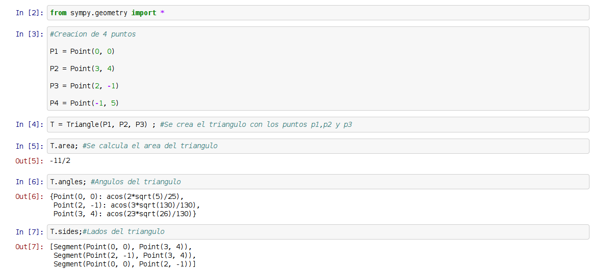
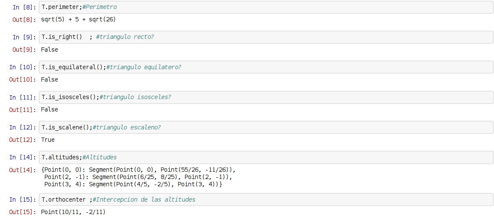
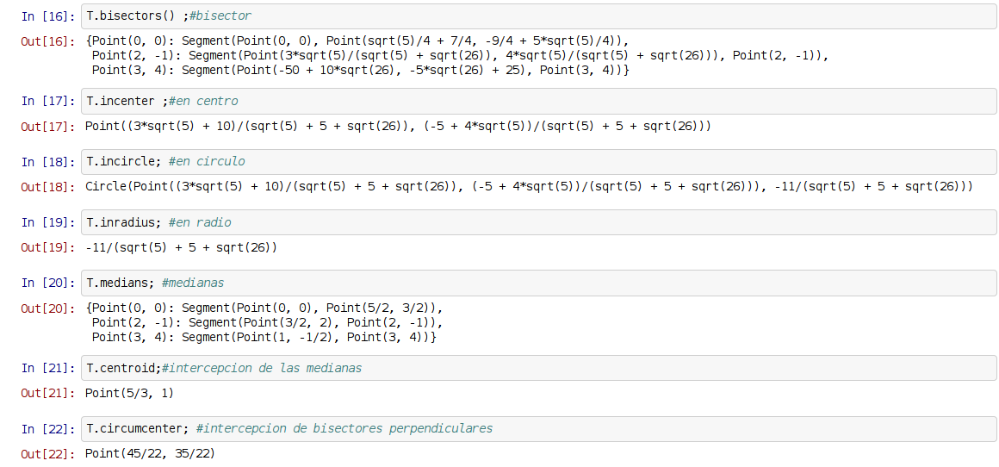
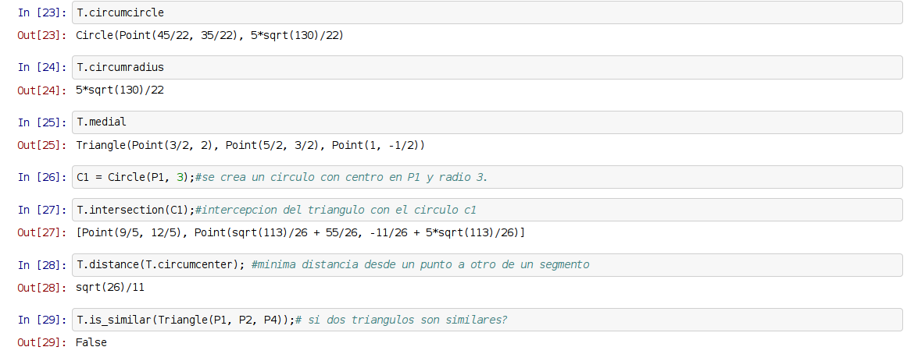

A continuación se tiene los artículos sobre sympy tratados anteriorente:
- Cálculo de límites con sympy
- Cálculo de derivadas con sympy
- Cálculo de integrales con sympy
- Resolución de sistemas de ecuaciones lineales con sympy
- Geometría Analítica con sympy (segmentos)
- Geometría Analítica con sympy (rectas)
- Geometría Analítica con sympy (circulos)
En este artículo se explicará las instrucciones de geometría analítica para el caso del triángulo.
A continuación el código del script:
#!/usr/bin/env python
from sympy.geometry import *
#Creacion de 4 puntos
P1 = Point(0, 0)
P2 = Point(3, 4)
P3 = Point(2, -1)
P4 = Point(-1, 5)
T = Triangle(P1, P2, P3) ; #Se crea el triangulo con los puntos p1,p2 y p3
print (T.area); #Se calcula el area del triangulo
print (T.angles); #Angulos del triangulo
print (T.sides);#Lados del triangulo
print (T.perimeter);#Perimetro
print (T.is_right()) ; #triangulo recto?
print (T.is_equilateral());#triangulo equilatero?
print (T.is_isosceles());#triangulo isosceles?
print (T.is_scalene());#triangulo escaleno?
print (T.altitudes);#Altitudes
print (T.orthocenter) ;#Intercepcion de las altitudes
print (T.bisectors()) ;#bisector
print (T.incenter) ;#en centro
print (T.incircle); #en circulo
print (T.inradius); #en radio
print (T.medians); #medianas
print (T.centroid);#intercepcion de las medianas
print (T.circumcenter); #intercepcion de bisectores perpendiculares
print (T.circumcircle)
print (T.circumradius)
print (T.medial)
C1 = Circle(P1, 3);#se crea un circulo con centro en P1 y radio 3.
print (T.intersection(C1));#intercepcion del triangulo con el circulo c1
print (T.distance(T.circumcenter)); #minima distancia desde un punto a otro de un segmento
print (T.is_similar(Triangle(P1, P2, P4)));# si dos triangulos son similares?
A continuación se muestra la salida del script:
-11/2
{Point(2, -1): acos(3*sqrt(130)/130), Point(0, 0): acos(2*sqrt(5)/25), Point(3, 4): acos(23*sqrt(26)/130)}
[Segment(Point(0, 0), Point(3, 4)), Segment(Point(2, -1), Point(3, 4)), Segment(Point(0, 0), Point(2, -1))]
sqrt(5) + 5 + sqrt(26)
False
False
False
True
{Point(2, -1): Segment(Point(6/25, 8/25), Point(2, -1)), Point(0, 0): Segment(Point(0, 0), Point(55/26, -11/26)), Point(3, 4): Segment(Point(4/5, -2/5), Point(3, 4))}
Point(10/11, -2/11)
{Point(2, -1): Segment(Point(3*sqrt(5)/(sqrt(5) + sqrt(26)), 4*sqrt(5)/(sqrt(5) + sqrt(26))), Point(2, -1)), Point(0, 0): Segment(Point(0, 0), Point(sqrt(5)/4 + 7/4, -9/4 + 5*sqrt(5)/4)), Point(3, 4): Segment(Point(-50 + 10*sqrt(26), -5*sqrt(26) + 25), Point(3, 4))}
Point((3*sqrt(5) + 10)/(sqrt(5) + 5 + sqrt(26)), (-5 + 4*sqrt(5))/(sqrt(5) + 5 + sqrt(26)))
Circle(Point((3*sqrt(5) + 10)/(sqrt(5) + 5 + sqrt(26)), (-5 + 4*sqrt(5))/(sqrt(5) + 5 + sqrt(26))), -11/(sqrt(5) + 5 + sqrt(26)))
-11/(sqrt(5) + 5 + sqrt(26))
{Point(2, -1): Segment(Point(3/2, 2), Point(2, -1)), Point(0, 0): Segment(Point(0, 0), Point(5/2, 3/2)), Point(3, 4): Segment(Point(1, -1/2), Point(3, 4))}
Point(5/3, 1)
Point(45/22, 35/22)
Circle(Point(45/22, 35/22), 5*sqrt(130)/22)
5*sqrt(130)/22
Triangle(Point(3/2, 2), Point(5/2, 3/2), Point(1, -1/2))
[Point(9/5, 12/5), Point(sqrt(113)/26 + 55/26, -11/26 + 5*sqrt(113)/26)]
sqrt(26)/11
False
El código del script anterior lo pueden ver en el siguiente enlace en bitbucket.org.
También se puede usar notebook (ipython notebook), el archivo que se utilizó se puede descargar en el enlace.
A continuación se muestra una figura de la ejecución del notebook:




¡Haz tu donativo! Si te gustó el artículo puedes realizar un donativo con Bitcoin (BTC) usando la billetera digital de tu preferencia a la siguiente dirección: 17MtNybhdkA9GV3UNS6BTwPcuhjXoPrSzV
O Escaneando el código QR desde la billetera:

Comments !